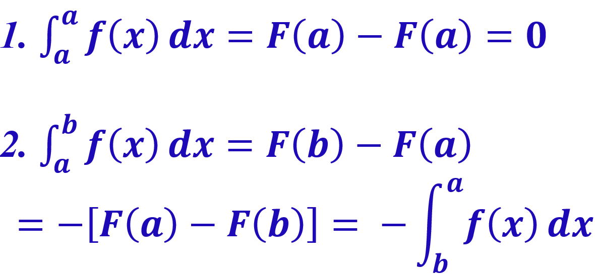

Topic 14 Definite Integral
Let’s first review the concepts of antiderivative.
- Definition of Antiderivative
- Basic Rules of Derivatives and Integral.
Example 1: Find the following integrals:
\(\int \frac{1}{x^3}dx\).
\(\int e^{4x}dx\)
\(\int (x^3 + 3e^x + 1/x + \sqrt[3]{x})dx\)
Solution:
- Rewrite the fractional function as a power function and then use the power rule.
\[ \int \frac{1}{x^3} dx = \int x^{-3}dx = \frac{x^{-3 + 1}}{-3 + 1}+ C = \frac{x^{-2}}{-2} + C = -\frac{1}{2x^2} + C. \]
- Recall that \(\int e^x dx = e^x + C\). We need to some algebraic manipulation before using the exponential rule.
\[ \int e^{4x}dx = \int e^{4x} d\left(\frac{4x}{4} \right) = \frac{1}{4}\int e^{4x} d(4x) \]
\[ \stackrel{y = 4x}{=} \frac{1}{4} \int e^y dy = \frac{1}{4}(e^y + C) = \frac{e^{4x}}{4} + C. \]
- This problem combines several rules of integration.
\[ \int (x^3 + 3e^x + 1/x + \sqrt[3]{x})dx = \int x^3 dx + 3\int e^x dx + \int \frac{1}{x} dx + \int x^{1/3} dx \]
\[ = \frac{x^{3+1}}{3+1} + 3e^x + \ln |x| + \frac{x^{1/3 + 1}}{1/3 + 1} + C = \frac{x^4}{4} + 3e^x + \ln|x| + \frac{x^{4/3}}{4/3} \] \[ = \frac{x^4}{4} + 3e^x + \ln|x| + \frac{3x^{4/3}}{4} . \]
14.1 Areas Defined by Curves of Functions
We have learned several area formulas in algebra. For example,
However, if have a region defined by curves and lines such as the one shown below. How find the area?
Although we don’t have a formula to find the area, however, We can approximate the area by adding up the areas of rectangles with equal width as showing in the following figure.
Example 1: Consider the graph of \(f(x) = \sqrt{4-x^2}\) over the interval \([0,2]\).
We demonstrate the accuracy of approximation using difference number of rectangles in the following. We first look at the case of 4 rectangles with the following calculation

As we split the interval \([0,2]\) with more subintervals with equal width, we will get more accurate approximations.
If the number of the subintervals goes to infinity, we expect to obtain the actual area - this limiting process leads to the definition of definition integral over an interval.
14.2 Definite Integral
Definition: Let \(y = f(x)\) be continuous and non-negative over an interval \([a, b]\). A definite integral of \(f(x)\) over interval \([a, b]\) is the limit as \(n \to \infty\) (equivalently, the equal width \(\Delta x \to 0\)) of the Riemann sum of the areas of rectangles under the graph of \(y = f(x)\) over \([a,b]\).
\[ \text{exact area} = \lim_{\Delta x \to 0} \sum_{i=1}^n f(x_i)\Delta x = \int_a^bf(x) dx. \]
Caution: The above definition assumes that the function is positive. If the function is negative over \([a,b]\), the corresponding area is negative. If a function has both negative and positive components, then negative defines negative area and the positive part defined the positive area. For example, \(A_1\) is positive and \(A_2\) is negative in the following figure.
14.3 Fundmental Theorem of Calculus
To develop a technical formula to calculate the area under the curve of a positive function \(f(x)\) over an interval, we define the following following area function \(A(x)\), an antiderivative of \(f(x)\), that is,
\[ \frac{d A(x)}{dx} = f(x). \]
Theorem: Let \(f(x)\) be a non-negative continuous function over \([0, b]\), and let \(A^\prime(x) = f(x)\) be the area between the graph of \(f(x)\) and the x-axis over \([0, x]\), with \(A(x)\). Then \(0 < x < b\) is a differentiable function of \(x\) and \(A^\prime(x) = f(x)\).
Definition: Let \(f(x)\) be any continuous function over \([a, b]\) and \(F(x)\) be any antiderivative of \(f(x)\).
Results from Fundamental Theorem of Calculus

Example 2: Evaluate the following definite integrals
\(\int_{-1}^4 (x^2-x)dx\)
\(\int_0^2 e^x dx\)
Solution: Use the fundamental theorem of calculus.
\(\int_{-1}^4 (x^2-x)dx = \int_{-1}^4 x^2 dx - \int_{-1}^4 x dx = \frac{x^3}{3}\Big|_{-1}^4 - \frac{x^2}{2}\Big|_{-1}^4=\frac{4^3 - (-1)^3}{3} - [\frac{4^2-(-1)^2}{2}] = \frac{65}{3} - \frac{15}{2} = \frac{85}{6}\).
\(\int_0^2 e^x dx = e^x \Big|_0^2 = e^2 - 1\).
Example 3: Business application Melanie’s Crafts estimates that its sales are growing continuously at a rate given by
\[ S^\prime(t) = 20 e^t, \] where \(S^\prime(t)\) is in dollars per day, on day \(t\).
Find the accumulated sales for the first 5 days.
Find the accumulated sales from the beginning of the 2nd day through the 5th day.
Solution: Note that the accumulated sale is given by \[ f(t) = S^\prime(t) = 20e^t. \] 1. The accumulated sales for the first 5 days the accumulated sales for the first 5 days is \[ \int_0^5f(t)dt = \int_0^5 20e^t dt = 20\int_0^5 e^t dt = 20\left(e^t \Big|_0^5\right) = 20(e^5 - e^0) \approx 2948.26. \]
- The accumulated sales from the beginning of the 2nd day through the 5th day is
\[
\int_2^5 20e^t dt = 20 \int_2^5e^t dt = 20\left(e^t\Big|_2^5\right) = 20(e^5 - e^2) \approx 2820.48.
\]
14.4 Properties of Definite Integrals
The additive property of definite integrals is summarized in the following theorem.
Theorem 2: For any \(c\) in interval \([a, b]\), \[ \int_a^b f(x) dx = \int_a^c f(x) dx + \int_c^b f(x) dx. \]
Example 3: Find the definite integral of \(f(x)\) over interval \([-4, 4]\) where \[ f(x) = \left\{ \begin{array}{lcl} -3\sqrt{x} & \text{for} & x > 0 \\ x & \text{for} & x \le 0 \end{array}. \right. \]
Solution: Since the function on interval has two different expressions. So the additive property of integral should be used.
\[ \int_{-4}^4 f(x) dx = \int_{-4}^0 f(x) dx + \int_0^4 f(x) dx =\int_0^4 -3\sqrt{x} dx + \int_{-4}^0 xdx \] \[ = -3\int_0^4 x^{1/2}dx + \int_{-4}^0 x dx =-3 \frac{x^{1/2+1}}{1/2+1}\Big|_0^4 +\frac{x^2}{2}\Big|_{-4}^0 \] \[ =-3\frac{x^{3/2}}{3/2}\Big|_0^4 + \left[0 - \frac{(-4)^2}{2}\right]=-2\sqrt{x^3}\Big|_0^4 - 8 = -16 -8 = -24 \]
The next property is related to the area of a region bounded by two graphs.
Theorem 3: Let \(f(x)\) and \(g(x)\) to be continuous functions with \(f(x) \ge g(x)\) over \([a, b]\). Then the area of the region between the two curves, from \(x = a\) to \(x = b\), is
\[ \int_a^b [f(x) - g(x)] dx \]
Clearly, \[ \int_a^b [f(x) - g(x)] dx = \int_a^b f(x) dx - \int_a^b g(x) dx. \]
Example: Find the area of the region enclosed by \(f(x) = \sqrt{x}\) and \(g(x) = x\).
Solution: From the enclosed region is defined on interval \([0, 1]\). Therefore,
\[ \text{eclosed area} = \int_0^1 [f(x) - g(x)] dx = \int_0^1 \sqrt{x} dx - \int_0^1 x dx \]
\[ = \frac{x^{1/2+1}}{1/2+1}\Big|_0^1 - \frac{x^2}{2}\Big|_0^1 = \frac{1^{1/2+1}}{1/2+1} - \frac{1^2}{2} = \frac{2}{3} - \frac{1}{2} = \frac{1}{6}. \]
14.5 Average Value of A Continuous Function
From the definition of definite integral and its geometry we can see that integrate a function over an interval is a process of taking cumulative summation. It is meaningful to define the average value of a continuous function.
Definition For a continuous function \(f(x)\) over \([a, b]\), the average of \(f(x)\) over \([a, b]\), denoted by \(y_{\text{av}}\) or \(\overline{f(x)}\), is defined to be
\[ y_{\text{av}} = \frac{1}{b-a} \int_a^b f(x) dx \]
Example 5 The population of the United States can be approximated by
\[ P(t) = 310.65 e^{0.00722t}, \] where \(P(t)\) is in millions and \(t\) is in the number of years since 2010. (Source: Population Division, U.S. Census Bureau) Find the average size of the population from 2012 and 2019.
Solution: This problem is equivalent to finding the average of the population growth function over interval \([2012-2010, 2019-2010] = [2,9]\).
\[ \text{average population} = \frac{1}{9-2} \int_{2}^{9}310.65 e^{0.00722t} dt \] \[ =\frac{1}{7} \times 310.65 \int_{2}^{9}e^{0.00722t} d\left(\frac{0.00722t}{0.00722} \right) \]
\[ =\frac{1}{7} \times \frac{310.65}{0.00722} \int_{2}^{9}e^{0.00722t} d (0.00722t) \] \[ = \frac{1}{7} \times \frac{310.65}{0.00722} \times e^{0.00722t}\Big|_2^9 \] \[ \approx 6146.617\times(e^{0.00722\times 9} - e^{0.00722\times 2}) \approx 323.2685 \]